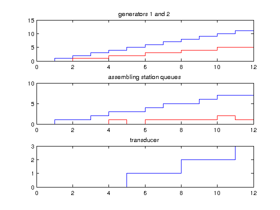

Analyze and Plot Data after Experiment: Testcase two outputs to one input
All state variables in s of atmic models have been tracked, because the observe_flag was recursively set for the entire model via set_observe(root_model, 1) before call of the root_coordinator.
State values and time stamps are stored in a property named observed of the atomics.
Call: plot_and_analyze2out1in
File: DEVSPATH/02-examples/discrete/2-outputs-to-1-input/plot_and_analyze2out1in.m

Contents
Generators
tg1_values = [root_model.components.am_g1.observed{:,1}];
g1states = [root_model.components.am_g1.observed{:,2}];
g1count = [g1states.counter];
tg2_values = [root_model.components.am_g2.observed{:,1}];
g2states = [root_model.components.am_g2.observed{:,2}];
g2count = [g2states.counter];
figure('name','Testcase: two outputs to one input','NumberTitle','off');
subplot(3,1,1)
stairs(tg1_values,g1count);
hold on
stairs(tg2_values,g2count,'red');
title('generators 1 and 2')
Assembling Station with Queues
tproc_values = [root_model.components.am_proc.observed{:,1}];
procstates = [root_model.components.am_proc.observed{:,2}];
procq1 = [procstates.q1];
procq2 = [procstates.q2];
subplot(3,1,2)
stairs(tproc_values,procq1);
hold on
stairs(tproc_values,procq2,'red');
title('assembling station queues');
Transducer
t_values = [root_model.components.am_t1.observed{:,1}];
states = [root_model.components.am_t1.observed{:,2}];
statenames = fieldnames(states);
%disp(['Data available: ',statenames, ' acessible via ''[states.statename]'''])
q_values=[states.q];
subplot(3,1,3)
stairs(t_values,q_values);
title('transducer');
DEVS Tbx Home Examples Modelbase << Back